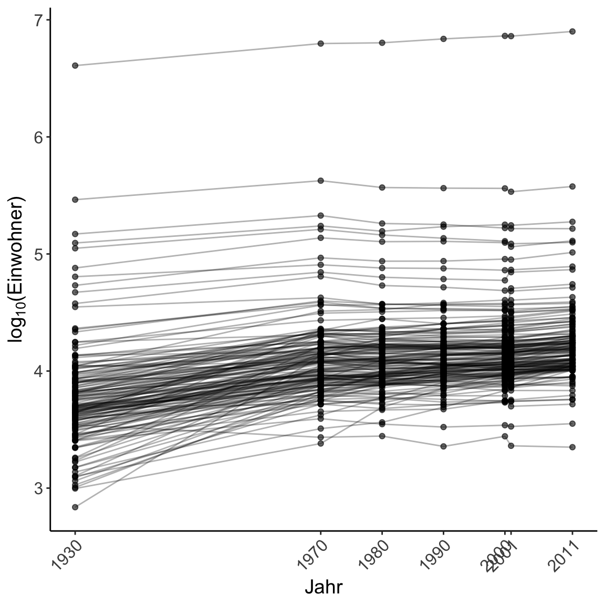

Wrangling II
|
R for Data Science Basel R Bootcamp |

|

adapted from trueloveproperty.co.uk
Overview
In diesem Practical wirst du das Transformieren, Gruppieren und Analysieren von Daten mit dplyr üben.
Am Ende des Practicals wirst du wissen wie man:
- Daten transformiert
- Daten gruppiert und deskriptive Statistiken berechnen kann
Tasks
A - Setup
Öffne dein
BaselRBootcampR project. Es sollte bereits die Ordner1_Dataund2_Codeenthalten. Stelle sicher, dass du alle Datensätze, welche imDatensätzeTab aufgelisted sind, in deinem1_DataOrdner hast.Öffne ein neues R Skript. Schreibe deinen Namen, das Datum und “Wrangling II Practical” als Kommentare an den Anfang des Skripts.
## NAME
## DATUM
## Wrangling II PracticalSpeichere es das neue Skript unter dem Namen
wrangling_II_practical.Rin den2_CodeOrdner.Lade das
tidyversePaket.
# Pakete laden
library(tidyverse) library(tidyverse)B - Transformation zwischen Long und Wide Format
- In diesem Practical verwenden wir zunächst den
bevoelkerung.csvDatensatz. Er enthält die Einwohnerzahlen verschiedener schweizer Städte von 1930 bis 2011. ImDatensätzeTab findest du eine Auflistung und eine kurze Beschreibung der im Datensatz enthaltenen Variablen. Lese den Datensatz mit derread_csv()Funktion in R ein und speichere ihn unter dem Namenbev.
bev <- read_csv(file = "1_Data/bevoelkerung.csv")Mache dich mit dem Datensatz vertraut in dem du die ersten paar Zeilen und die Vriablennamen anschaust.
Im Moment sind die Daten so angeordnet, dass jedes Jahr eine einzelne Spalte hat, also im Wide Format. Diese Anordnung ist praktisch zum Eingeben von Daten und um die Daten als Tabelle anzuschauen. Für viele Anwendungen, wie gewisse statistische Analysen oder Plotting, brauchen wir die Daten aber im Long format. Für diese Transformation verwenden wir
pivot_longer().
Zur Rekapitulation, pivot_longer() in der einfachsten “Version” braucht drei Argumente: i) den Datensatz, ii) die Spaltennamen als Spezifikation, welche Spalten vom Wide ins Long Format transformiert werden sollen, und iii) den Spaltennamen der neuen Gruppierungsvariable.
Unter Verwendung nur dieser drei Argumente, Transformiere die st_wbev_2011 und st_wbev_2001 Variablen aus bev vom Wide ins Long Format und speichere es als neues Objekt ab.
# Transofmation vom Wide ins Long Format
bev_long <- bev %>%
pivot_longer(c("XXX", "XXX"), names_to = "jahr")# Transofmation vom Wide ins Long Format
bev_long <- bev %>%
pivot_longer(c("st_wbev_2011", "st_wbev_2001"), names_to = "jahr")Schaue dir das Resultat, also den neu erstellten Datensatz an. Versuche nachzuvollziehen was genau gemacht wurde, welche Variablen sich verändert haben und welche nicht. Frage nach, falls du etwas nicht nachvollziehen kannst.
Nun da wir die basics haben, wollen wir nicht nur die Jahre 2001 und 2011, sondern alle im Datensatz vorhandenen ins Long Format bringen. Schaue dir dazu nochmals die Namen der Variablen an.
names(bev) [1] "Stadtname" "st_wbev_2011" "st_wbev_2001"
[4] "proz_ver-2001–2011" "bevdichte" "st_wbev_1930"
[7] "st_wbev_1970" "st_wbev_1980" "st_wbev_1990"
[10] "st_wbev_2000" - Wie du siehst, hat jede Jahr-Variable die gleiche Struktur, nämlich
st_wbev_XXXX. Dieser Umstand ist hilfreich, da wir dadurch nicht jede Variable explizit auflisten müssen, sondern diestarts_with()Funktion verwenden können. Schaue dir dazu die help page der Funktion an.
?starts_withHelp on topic 'starts_with' was found in the following packages:
Package Library
dplyr /Library/Frameworks/R.framework/Versions/3.6/Resources/library
tidyselect /Library/Frameworks/R.framework/Versions/3.6/Resources/library
tidyr /Library/Frameworks/R.framework/Versions/3.6/Resources/library
Using the first match ...- Benutze
pivot_longer()undstarts_with()um alle Jahr-Variablen zu transformieren.
bev_long <- bev %>%
pivot_longer(starts_with("st_"), names_to = "jahr")Schaue dir das Resultat an.
Die Einwohnerzahl ist im neuen Datensatz in der Spalte
valueenthalten. Dieser Name wird per default gewählt, ist aber nicht informativ. Wir können einen eigenen Namen wählen, in dem wir inpivot_longer()zusätzlich dasvalues_toArgument spezifizieren. Wiederhole den Code von Aufgabe 11, und ändere diesen so, dass die Spalte mit den Einwohnerzhlen neueinwohnerstattvalueheisst.
bev_long <- bev %>%
pivot_longer(starts_with("st_"), names_to = "jahr", values_to = "einwohner")- Schaue dir das Resultat an. Als letzten Schritt wollen wir noch die Werte der Variable
jahrso anpassen, dass wir nur die Jahreszahl haben. Eine Möglichkeit wäre, das jetzige Resultat zu nehmen, und mitmutate()undcase_when(), die wir im letzten Practical genauer angeschaut haben, die Variable abzuändern.pivot_longer()bietet mit demnames_prefixArgument eine Möglichkeit, alles in einem Schritt durchzuführen. Dazu spezifizieren wir einfach in Anführungszeichen, welcher Teil gelöscht werden soll. Füge zum Code der vorherigen Aufgabe dasnames_prefixArgument hinzu, sodass diejahrVariable nur noch die Jahreszahl enthält.
bev_long <- bev %>%
pivot_longer(starts_with("st_"), names_to = "jahr", values_to = "einwohner",
names_prefix = "st_wbev_")- Nun können wir mit dem neu erstellten Datensatz arbeiten und, zum Beispiel, einen Plot erstellen. Plotting werden wir zu einem späteren Zeitpunkt behandeln, daher unten nur ein kleines Code Beispiels eines Plots.
# generiere ein leeres Plot fenster mit den spezifizierten Variablen auf den Achsen
ggplot(bev_long, aes(as.numeric(jahr), log(einwohner, base = 10),
# gruppiere gemäss der Stadtname variable; nötig um separate
# Linien pro Stadt zu erhalten
group = Stadtname)) +
# füge die Datenpunkte hinzu
geom_point(alpha = .6) +
# verbinde die Datenpunkte pro Stadt
geom_line(alpha = .3) +
# sopezifiziere die Achsenbeschriftungen
labs(x = "Jahr", y = expression("log"[10]*"(Einwohner)")) +
scale_x_continuous(breaks = c(1930, 1970, 1980, 1990, 2000, 2001, 2011)) +
# spezifiziere Plot layout
theme_classic() +
theme(axis.text.x = element_text(angle=45, size = 12, hjust = 1),
axis.text.y = element_text(size = 12),
axis.title = element_text(size = 14))
- Wie bereits geschildert, ist das Long Format für viele Analysen und Visualisierungen besser geeignet. Es gibt jedoch auch Situationen in denen das Wide Format praktischer ist, zum Beispiel, wenn wir die Verändererung der Einwohnerzahlen zwischen 1930 und 2011 berechnen wollen. Lass uns für diese Übung so tun, als ob wir die Daten nur im Long Format (
bev_long) hätten und sie daher zuerst ins Wide Format umwandeln müssten. Dazu verwenden wirpivot_wider()und spezifizieren die Argumentenames_from,values_fromundnames_prefix. Speichere das Ergebnis unterbev_wideab und vergleichebev_widemitbevum sicherzustellen, dass die Transformation korrekt funktioniert hat.
bev_wide <- bev_long %>%
pivot_wider(names_from = jahr, values_from = einwohner,
names_prefix = "st_wbev_")B - Wiederholung Wrangling I
- Für den Rest des Practicals verwenden wir den
kc_house.csvDatensatz. Er enthält Verkaufspreise von Häusern in King County, Washington. Aufgelistet sind Häuser, welche zwischen Mai 2014 und Mai 2015 verkauft wurden. Nebst den Verkaufspreisen enthält der Datensatz Spezifikationen der Häuser, z.B. die Anzahl Zimmer eines Hauses. Lese den Datensatz mit derread_csv()Funktion in R ein und speichere ihn unter dem Namenkc_house.
kc_house <- read_csv(file = "1_Data/kc_house.csv")- Exploriere den Datensatz um einen Eindruck über dessen Struktur zu erhalten.
kc_house# A tibble: 21,613 x 19
id date price bedrooms bathrooms sqft_living sqft_lot
<chr> <dttm> <dbl> <dbl> <dbl> <dbl> <dbl>
1 7129… 2014-10-13 00:00:00 2.22e5 3 1 1180 5650
2 6414… 2014-12-09 00:00:00 5.38e5 3 2.25 2570 7242
3 5631… 2015-02-25 00:00:00 1.80e5 2 1 770 10000
4 2487… 2014-12-09 00:00:00 6.04e5 4 3 1960 5000
5 1954… 2015-02-18 00:00:00 5.10e5 3 2 1680 8080
6 7237… 2014-05-12 00:00:00 1.23e6 4 4.5 5420 101930
7 1321… 2014-06-27 00:00:00 2.58e5 3 2.25 1715 6819
8 2008… 2015-01-15 00:00:00 2.92e5 3 1.5 1060 9711
9 2414… 2015-04-15 00:00:00 2.30e5 3 1 1780 7470
10 3793… 2015-03-12 00:00:00 3.23e5 3 2.5 1890 6560
# … with 21,603 more rows, and 12 more variables: floors <dbl>,
# waterfront <dbl>, view <dbl>, condition <dbl>, grade <dbl>,
# sqft_above <dbl>, sqft_basement <dbl>, yr_built <dbl>,
# yr_renovated <dbl>, zipcode <dbl>, lat <dbl>, long <dbl>summary(kc_house) id date price
Length:21613 Min. :2014-05-02 00:00:00 Min. : 75000
Class :character 1st Qu.:2014-07-22 00:00:00 1st Qu.: 321950
Mode :character Median :2014-10-16 00:00:00 Median : 450000
Mean :2014-10-29 04:38:01 Mean : 540088
3rd Qu.:2015-02-17 00:00:00 3rd Qu.: 645000
Max. :2015-05-27 00:00:00 Max. :7700000
bedrooms bathrooms sqft_living sqft_lot
Min. : 0.0 Min. :0.00 Min. : 290 Min. : 520
1st Qu.: 3.0 1st Qu.:1.75 1st Qu.: 1427 1st Qu.: 5040
Median : 3.0 Median :2.25 Median : 1910 Median : 7618
Mean : 3.4 Mean :2.11 Mean : 2080 Mean : 15107
3rd Qu.: 4.0 3rd Qu.:2.50 3rd Qu.: 2550 3rd Qu.: 10688
Max. :33.0 Max. :8.00 Max. :13540 Max. :1651359
floors waterfront view condition
Min. :1.00 Min. :0.000 Min. :0.00 Min. :1.00
1st Qu.:1.00 1st Qu.:0.000 1st Qu.:0.00 1st Qu.:3.00
Median :1.50 Median :0.000 Median :0.00 Median :3.00
Mean :1.49 Mean :0.008 Mean :0.23 Mean :3.41
3rd Qu.:2.00 3rd Qu.:0.000 3rd Qu.:0.00 3rd Qu.:4.00
Max. :3.50 Max. :1.000 Max. :4.00 Max. :5.00
grade sqft_above sqft_basement yr_built
Min. : 1.00 Min. : 290 Min. : 0 Min. :1900
1st Qu.: 7.00 1st Qu.:1190 1st Qu.: 0 1st Qu.:1951
Median : 7.00 Median :1560 Median : 0 Median :1975
Mean : 7.66 Mean :1788 Mean : 292 Mean :1971
3rd Qu.: 8.00 3rd Qu.:2210 3rd Qu.: 560 3rd Qu.:1997
Max. :13.00 Max. :9410 Max. :4820 Max. :2015
yr_renovated zipcode lat long
Min. : 0 Min. :98001 Min. :47.2 Min. :-122
1st Qu.: 0 1st Qu.:98033 1st Qu.:47.5 1st Qu.:-122
Median : 0 Median :98065 Median :47.6 Median :-122
Mean : 84 Mean :98078 Mean :47.6 Mean :-122
3rd Qu.: 0 3rd Qu.:98118 3rd Qu.:47.7 3rd Qu.:-122
Max. :2015 Max. :98199 Max. :47.8 Max. :-121 - Schaue dir mit der
names()Funktion die Variablennamen an.
names(kc_house) [1] "id" "date" "price" "bedrooms"
[5] "bathrooms" "sqft_living" "sqft_lot" "floors"
[9] "waterfront" "view" "condition" "grade"
[13] "sqft_above" "sqft_basement" "yr_built" "yr_renovated"
[17] "zipcode" "lat" "long" - Da es sich um einen US Datensatz handelt, sind die Flächenangaben in Quadratfuss angegeben. Wir als “rest of the world” sind es eher gewohnt in Quadratmeter zu denken. Kreiere dazu drei neue Variablen
living_sqm,above_sqmundbasement_sqm, welche die jeweilige Raumgrösse in Quadratmeter angeben (Tipp: ein Quadratfuss entspricht 0.093 Quadratmeter).
kc_house <- kc_house %>%
mutate(living_sqm = sqft_living * 0.093,
above_sqm = sqft_above * 0.093,
basement_sqm = sqft_basement * 0.093)- Kreiere eine neue Spalte
total_sqm, welche die Summer ausliving_sqm,above_sqmundbasement_sqmdarstellt.
kc_house <- kc_house %>%
mutate(total_sqm = living_sqm + above_sqm + basement_sqm)- Füge eine neue Variable
mansionhinzu, welche den Wert “yes” annimmt, wenntotal_sqmgrösses als 750 ist und “no”, wenntotal_sqmkleiner oder gleich 750 ist.
kc_house <- kc_house %>%
mutate(mansion = case_when(
total_sqm > 750 ~ "yes",
total_sqm <= 750~ "no"))C - Einfache deskriptive Statistiken
- Unter Verwendung der base-R
data$colNotation, berechne den Mittelwert über alle Hauspreise.
mean(kc_house$price)[1] 540088- Wiederhole die vorherige Aufgabe, diesmal unter Verwendung der
summarise()Funktion. Worin besteht der Unterschied der Resultate dieser und der vorherigen Aufgabe?
kc_house %>%
summarise(
price_mean = mean(price)
)# A tibble: 1 x 1
price_mean
<dbl>
1 540088.- Wie hoch ist der Medianpreis aller Häuser? Benutze dazu die
median()Funktion. Worin besteht der Unterschied zwischen dem Mittelwert und dem Median?
kc_house %>%
summarise(
price_median = median(price)
)# A tibble: 1 x 1
price_median
<dbl>
1 450000- Wie hoch ist der höchste Verkaufspreis? Tipp: das Maximum eines Vektors findest du mit der
max()Funktion.
kc_house %>%
summarise(
price_max = max(price)
)# A tibble: 1 x 1
price_max
<dbl>
1 7700000- Sortiere mittels der
arrange()und derdesc()Funktion den Datensatz in absteigender Reihenfolge und printe das Resultat. Du kannst kontrollieren ob es Funktioniert hat, in dem du überprüfst ob der höchste Verkaufspreis, den du in der letzten Aufgabe herausgefunden hast, zuoberst erscheint.
kc_house <- kc_house %>%
arrange(desc(price))
kc_house# A tibble: 21,613 x 24
id date price bedrooms bathrooms sqft_living sqft_lot
<chr> <dttm> <dbl> <dbl> <dbl> <dbl> <dbl>
1 6762… 2014-10-13 00:00:00 7.70e6 6 8 12050 27600
2 9808… 2014-06-11 00:00:00 7.06e6 5 4.5 10040 37325
3 9208… 2014-09-19 00:00:00 6.88e6 6 7.75 9890 31374
4 2470… 2014-08-04 00:00:00 5.57e6 5 5.75 9200 35069
5 8907… 2015-04-13 00:00:00 5.35e6 5 5 8000 23985
6 7558… 2015-04-13 00:00:00 5.30e6 6 6 7390 24829
7 1247… 2014-10-20 00:00:00 5.11e6 5 5.25 8010 45517
8 1924… 2014-06-17 00:00:00 4.67e6 5 6.75 9640 13068
9 7738… 2014-08-15 00:00:00 4.50e6 5 5.5 6640 40014
10 3835… 2014-06-18 00:00:00 4.49e6 4 3 6430 27517
# … with 21,603 more rows, and 17 more variables: floors <dbl>,
# waterfront <dbl>, view <dbl>, condition <dbl>, grade <dbl>,
# sqft_above <dbl>, sqft_basement <dbl>, yr_built <dbl>,
# yr_renovated <dbl>, zipcode <dbl>, lat <dbl>, long <dbl>,
# living_sqm <dbl>, above_sqm <dbl>, basement_sqm <dbl>,
# total_sqm <dbl>, mansion <chr>- Wie gross ist der Anteil an Häuser, welche für mehr als 1 Million verkauft wurden? Tipp:
TRUEundFALSEwerden von R als 1 respektive 0 interpretiert. Wenn wir daher den Mittelwert eines Vektors mitTRUEundFALSEberechnen, erhalten wir den Anteil (Beispiel:mean(c(TRUE, TRUE, FALSE, TRUE))ergibt 0.75).
kc_house %>%
summarise(mil_p = mean(price > 1000000))# A tibble: 1 x 1
mil_p
<dbl>
1 0.0678- Berechne die mittlere Anzahl Stockwerke (
floors) und Badezimmer (bathrooms) von Villen (mansion).
kc_house %>%
filter(mansion == "Yes") %>%
summarise(
floors_mean = mean(floors),
bathrooms_mean = mean(bathrooms)
)# A tibble: 1 x 2
floors_mean bathrooms_mean
<dbl> <dbl>
1 NaN NaND - Einfache gruppierte deskriptive Statistiken
- Erstelle eine Tabelle, welche dir anzeigt, wie viele Villen und wie viele normale Häuser (nicht-Villen) im Datensatz vorhanden sind. Benutze hierzu
group_by()zur Gruppierung nach Villen (mansion) undn()zur Berechnung der jeweiligen Anzahl.
kc_house %>%
group_by(mansion) %>%
summarise(N = n())# A tibble: 2 x 2
mansion N
<chr> <int>
1 no 20862
2 yes 751- Wie hoch ist der mittlere Verkaufspreis von Villen und normalen Häusern (nicht-Villen)?
kc_house %>%
group_by(mansion) %>%
summarise(N = n(),
price_mean = mean(price))# A tibble: 2 x 3
mansion N price_mean
<chr> <int> <dbl>
1 no 20862 504024.
2 yes 751 1541915.- Verwende
group_by()undsummarise()um die untenstehende Tabelle zu erhalten.
| mansion | N | price_min | price_mean | price_median | price_max |
|---|---|---|---|---|---|
| no | 20862 | 75000 | 504024 | 441000 | 3100000 |
| yes | 751 | 404000 | 1541915 | 1300000 | 7700000 |
- Haben Häuser, welche später gebaut wurden eine grössere Wohnfläche? Gruppiere zur Beantwortung dieser Frage die Daten nach
yr_builtund berechne dann die mittlere Wohnfläche.
kc_house %>%
group_by(yr_built) %>%
summarise(N = n(),
living = mean(living_sqm))# A tibble: 116 x 3
yr_built N living
<dbl> <int> <dbl>
1 1900 87 161.
2 1901 29 164.
3 1902 27 179.
4 1903 46 140.
5 1904 45 149.
6 1905 74 183.
7 1906 92 168.
8 1907 65 177.
9 1908 86 158.
10 1909 94 177.
# … with 106 more rows- Diese Tabelle hat recht viele Zeilen und ist daher etwas unübersichtlich. Kreiere eine neue Variable
built_decade, welche angibt, in welchem Jahrzehnt ein Haus gebaut wurde und erstelle dann die Tabelle der letzten Aufgabe Gruppiert nach dieser neuen Variable. Tipp: diefloor()Funktion rundet eine Zahl auf die nächst kleinere ganze Zahl ab.
kc_house %>%
mutate(built_decade = floor(yr_built / 10)) %>%
group_by(built_decade) %>%
summarise(N = n(),
living = mean(living_sqm))# A tibble: 12 x 3
built_decade N living
<dbl> <int> <dbl>
1 190 645 167.
2 191 806 164.
3 192 1192 163.
4 193 530 170.
5 194 1764 140.
6 195 2452 163.
7 196 2660 180.
8 197 2285 199.
9 198 2282 204.
10 199 2238 232.
11 200 3518 229.
12 201 1241 233.E - Mehrere Gruppen
- Dein Freund Theodorus interessiert sich für Häuser einer bestimmten Gegend, nämlich mit den Postleitzahlen (
zipcode) 98001, 98109, 98117 und 98199. Stelle ihm einen neuen Datensatztheodoruszusammen, welcher nur Häiuser dieser Gegend enthält. Tipp: der%in%Operator testet ob Elemente des Vektors auf der rechten Seite im Vektor auf der linken Seite enthalten sind.
theodorus <- kc_house %>%
filter(zipcode %in% c(98001, 98109, 98117, 98199))- Berechne für Theodorus den mittleren, den Median-, den Minimum-, den Maximumpreis, sowie die Anzahl Häuser pro Gruppe, separat für die Postleitzahlen und ob es eine Villa ist.
theodorus %>%
group_by(zipcode) %>%
summarise(price_mean = mean(price),
price_median = median(price),
floors_min = min(floors),
floors_max = max(floors),
N = n())# A tibble: 4 x 6
zipcode price_mean price_median floors_min floors_max N
<dbl> <dbl> <dbl> <dbl> <dbl> <int>
1 98001 280805. 260000 1 2.5 362
2 98109 879624. 736000 1 3 109
3 98117 576795. 544000 1 3 553
4 98199 791821. 689800 1 3 317X - Challenges
- Welche Postleitzahl hat den höchsten Anteil Häuser, welche am Wasser gebaut sind (
waterfront)? Printe nur diese Zeile des Datensatzes.
kc_house %>%
group_by(zipcode) %>%
summarise(waterfront_p = mean(waterfront)) %>%
arrange(desc(waterfront_p)) %>%
slice(1)# A tibble: 1 x 2
zipcode waterfront_p
<dbl> <dbl>
1 98070 0.203- Welches Haus hat das schlechteste Preis-Wohnraumgrösse Verhältnis? Printe nur diese Zeile des Datensatzes.
kc_house %>%
mutate(price_to_living = price / living_sqm) %>%
arrange(desc(price_to_living)) %>%
slice(1)# A tibble: 1 x 25
id date price bedrooms bathrooms sqft_living sqft_lot
<chr> <dttm> <dbl> <dbl> <dbl> <dbl> <dbl>
1 6021… 2015-04-07 00:00:00 874950 2 1 1080 4000
# … with 18 more variables: floors <dbl>, waterfront <dbl>, view <dbl>,
# condition <dbl>, grade <dbl>, sqft_above <dbl>, sqft_basement <dbl>,
# yr_built <dbl>, yr_renovated <dbl>, zipcode <dbl>, lat <dbl>,
# long <dbl>, living_sqm <dbl>, above_sqm <dbl>, basement_sqm <dbl>,
# total_sqm <dbl>, mansion <chr>, price_to_living <dbl>- Welche 10 Postleitzahlen haben im Schnitt die höchsten Hauspreise? Printe nur diese 10 Zeilen.
kc_house %>%
group_by(zipcode) %>%
summarise(price_mean = mean(price)) %>%
arrange(desc(price_mean)) %>%
slice(1:10)# A tibble: 10 x 2
zipcode price_mean
<dbl> <dbl>
1 98039 2160607.
2 98004 1355927.
3 98040 1194230.
4 98112 1095499.
5 98102 901258.
6 98109 879624.
7 98105 862825.
8 98006 859685.
9 98119 849448.
10 98005 810165.- Kreiere den folgenden Datensatz genau wie er unten steht.
| yr_built | N | price_mean | price_max | living_sqm_mean |
|---|---|---|---|---|
| 1990 | 320 | 563966 | 3640900 | 234 |
| 1991 | 224 | 630441 | 5300000 | 244 |
| 1992 | 198 | 548169 | 2480000 | 223 |
| 1993 | 202 | 556612 | 3120000 | 226 |
| 1994 | 249 | 486834 | 2880500 | 209 |
| 1995 | 169 | 577771 | 3200000 | 224 |
| 1996 | 195 | 639534 | 3100000 | 240 |
| 1997 | 177 | 606058 | 3800000 | 234 |
| 1998 | 239 | 594159 | 1960000 | 241 |
kc_house %>%
filter(yr_built >= 1990 & yr_built < 1999) %>%
group_by(yr_built) %>%
summarise(N = n(),
price_mean = mean(price),
price_max = max(price),
living_sqm_mean = mean(living_sqm)) %>%
knitr::kable(digits = 0)| yr_built | N | price_mean | price_max | living_sqm_mean |
|---|---|---|---|---|
| 1990 | 320 | 563966 | 3640900 | 234 |
| 1991 | 224 | 630441 | 5300000 | 244 |
| 1992 | 198 | 548169 | 2480000 | 223 |
| 1993 | 202 | 556612 | 3120000 | 226 |
| 1994 | 249 | 486834 | 2880500 | 209 |
| 1995 | 169 | 577771 | 3200000 | 224 |
| 1996 | 195 | 639534 | 3100000 | 240 |
| 1997 | 177 | 606058 | 3800000 | 234 |
| 1998 | 239 | 594159 | 1960000 | 241 |
Beispiele
# Wrangling II mit dplyr and tidyr ---------------------------
library(tidyverse) # Lade tidyverse für dplyr
# Lese den basel Datensatz ein
basel <- read_csv("1_Data/basel.txt")
# Keine Gruppierungsvariable
bas <- basel %>%
summarise(
alter_m = mean(alter, na.rm = TRUE),
einkommen_median = median(einkommen, na.rm = TRUE),
N = n()
)
bas
# Eine Gruppierungsvariable
bas_ges <- basel %>%
group_by(geschlecht) %>%
summarise(
alter_m = mean(alter, na.rm = TRUE),
einkommen_median = median(einkommen, na.rm = TRUE),
N = n()
)
bas_ges
# Zwei Gruppierungsvariablen
bas_ges_bil <- basel %>%
group_by(geschlecht, bildung) %>%
summarise(
alter_m = mean(alter, na.rm = TRUE),
einkommen_median = median(einkommen, na.rm = TRUE),
N = n()
)
bas_ges_bil
# Gruppiere nach Geschlecht und Bildung und berechne den Mittelwert aller
# Variablen des Typs numeric
basel %>%
group_by(geschlecht, bildung) %>%
summarise_if(is.numeric, mean, na.rm = TRUE)Datensätze
| File | Rows | Columns | Description |
|---|---|---|---|
| kc_house.csv | 21613 | 19 | Verkaufspreise von Häusern in King County zwischen Mai 2014 und Mai 2015. |
| bevoelkerung.csv | 161 | 10 | Einwohnerzahlen schweizer Städte von 1930 bis 2011. |
kc_house.csv
Erste 5 Zeilen und 5 Spalten von kc_house.csv
| id | date | price | bedrooms | bathrooms |
|---|---|---|---|---|
| 6762700020 | 2014-10-13 | 7700000 | 6 | 8.00 |
| 9808700762 | 2014-06-11 | 7062500 | 5 | 4.50 |
| 9208900037 | 2014-09-19 | 6885000 | 6 | 7.75 |
| 2470100110 | 2014-08-04 | 5570000 | 5 | 5.75 |
| 8907500070 | 2015-04-13 | 5350000 | 5 | 5.00 |
| Variable | Description |
|---|---|
| id | Identifizierungsvariable |
| date | Datum |
| price | Preis in $ |
| bedrooms | Anzahl Schlafzimmer |
| bathrooms | Anzahl Badezimmer |
| sqft_living | Wohnraumfläche in Quadratfuss |
| sqft_lot | Parzellengrösse in Quadratfuss |
| floors | Anzahl Stöcke |
| waterfront | Ist das Haus am Wasser gebaut (1) oder nicht (0) |
| view | Rating der Aussicht |
| condition | Rating des Zustands |
| grade | Gesamtrating |
| sqft_above | Dachstockfläche in Quadratfuss |
| sqft_basement | Kellerfläche in Quadratfuss |
| yr_built | Baujahr |
| yr_renovated | Jahr letzte Renovation |
| zipcode | Postleitzahl |
| lat | Lattitude |
| long | Longitude |
bevoelkerung.csv
Erste 5 Zeilen und 5 Spalten von bevoelkerung.csv
| Stadtname | st_wbev_2011 | st_wbev_2001 | proz_ver-2001–2011 | bevdichte |
|---|---|---|---|---|
| Basel | 164516 | 164665 | -0.1 | 69 |
| Bern | 125681 | 122211 | 2.8 | 24 |
| Genève | 188234 | 175697 | 7.1 | 119 |
| Lausanne | 129383 | 115272 | 12.2 | 31 |
| Winterthur | 103075 | 89484 | 15.2 | 15 |
| Variable | Description |
|---|---|
| Stadtname | Name der Stadt |
| st_wbev_2011 | Wohnbevölkerung im Jahr 2011 |
| st_wbev_2001 | Wohnbevölkerung im Jahr 2001 |
| proz_ver-2001–2011 | Veränderung der Einwohnerzahl in Prozent zwischen 2001 und 2011 |
| bevdichte | Bevölkerungsdichte |
| st_wbev_1930 | Wohnbevölkerung im Jahr 1930 |
| st_wbev_1970 | Wohnbevölkerung im Jahr 1970 |
| st_wbev_1980 | Wohnbevölkerung im Jahr 1980 |
| st_wbev_1990 | Wohnbevölkerung im Jahr 1990 |
| st_wbev_2000 | Wohnbevölkerung im Jahr 2000 |
Funktionen
Pakete
| Paket | Installation | Beschreibung |
|---|---|---|
tidyverse |
install.packages("tidyverse") |
Ein Metapaket für Data Science, einschliesslich dplyr, ggplot2 und weitere Pakete |
Functions
Wrangling
| Funktion | Paket | Beschreibung |
|---|---|---|
rename() |
dplyr |
Umbenennen von Spalten |
select() |
dplyr |
Auswahl von Spalten basierend auf Name oder Index |
filter() |
dplyr |
Auswahl von Zeilen basieren auf einem logischen Ausdruck |
arrange() |
dplyr |
Sortiere Zeilen |
mutate() |
dplyr |
Hinzufügen von Spalten |
case_when() |
dplyr |
Recodieren von Spalten |
group_by(), summarise() |
dplyr |
Gruppierung von Daten zur Berechnung deskriptiver Statistiken |
pivot_longer() |
tidyr |
Transormation vom Wide ins Long Format |
pivot_wider() |
tidyr |
Transormation vom Long ins Wide Format |
Ressourcen
Cheatsheets
from R Studio